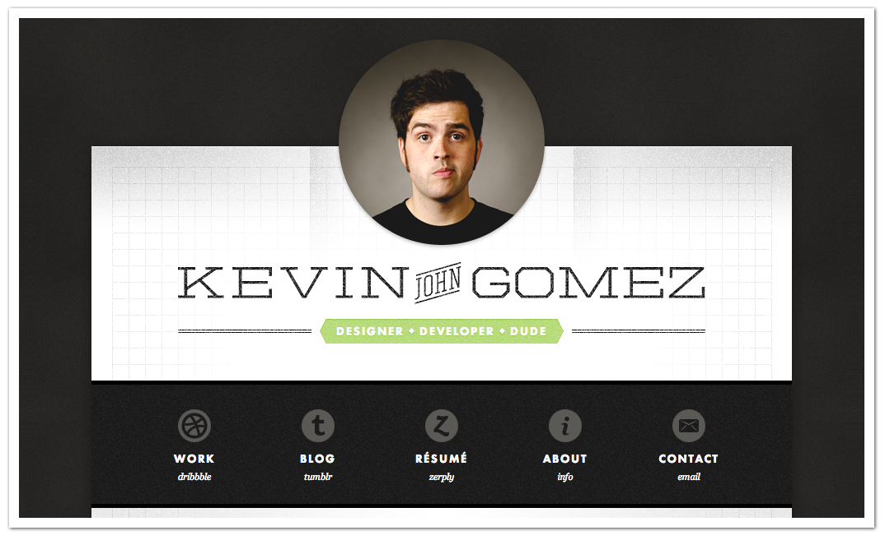
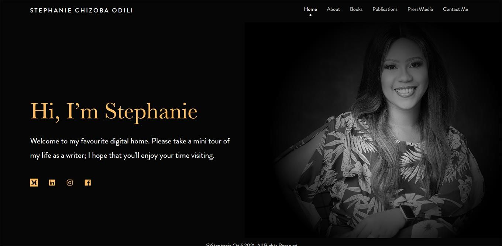

The Design Process
During my process to develop the site, I looked for examples of portfolio sites and ones that are used as examples on review or tutorial sites. With this approach I made notes of aspects I liked from the sites I saw and aspects I wanted to avoid in my own site. These aspects were adapted and translated into my running vision of the site and each page. Most of the sites that had something similar to a blog, however were not very helpful since the literature was placed on individual sites which I decided would be overkill for my small +/-700 word essays. Thus, I want my blogs to be on a single page with the hope of eventually making them collapsible when I integrate some Javascript into the site.

This image is from Kevin Gomez's previous portfolio site, I like how
minimalistic the site is. It makes for a good landing site, since
you dont want a user to be overwhelmed as soon as they land on your
site. I also like how easy it is for the eye to track directly to
his picture, then to his name and finally to the links he has
provided to social media and the other parts of his site.
Unfortunately, he has updated the site since this image was taken
and so I could not see how the rest of his site looked to see how
the theme carries through his pages. I have decided to use the large
image and simple design as part of my landing site.
Despite the site being one of my references and my main point being
that the site had minimal text, I decided to place my About Me blurb
on my landing page to keep the navigation bar cleaner without the
extra button linking to the page.

On the right, is the second reference I used, Stephanie Chizoba. She
has a little bit more text to her landing page, it is more of of a
welcoming spread to make users feel lore comforatble on her site as
if to say "Make yourself at home". However once again I was mostly
just interested in the layour of the page itself rather than the
content therein. Her site leads the eye to read it from left to
right, using color and font sizes to pull the eye to the left first
and then over to her image to take in the entire landing.
What I like about this site is its simplicity, unfortunately, the
rest of the pages of her site are not necassarily part of her own
site except for the About page in which the structure is very
similar but flipped so her article appears on the right, and the
image on the left, it is the structure of that page I want to mimic
with some aspects from Gomez's site such as the siz e of the image
and the shape sincea circle among squraes pulls the most attention.
Using these two sites as references for what to do and the Oracle Virtual Machine site as an example of what not to do, I set out to develop my siteaccording to the brief, starting by making a plain html site simply linking the pages together and then making the general layout for each page. Finally I style each page with its own layout to suit the content it needs.
The Home/Landing Page
 This page is the first page a user sees, it is meant to serve as an
introduction to the site and to me. For this purpose, I have opted
to assume readers will read the site from left to right and see the
image of me first and then move to read the blurb on the right.
This page is the first page a user sees, it is meant to serve as an
introduction to the site and to me. For this purpose, I have opted
to assume readers will read the site from left to right and see the
image of me first and then move to read the blurb on the right.
My picture is almost the same size as the blurb to keep the site
somewhat balanced, while the image is rounded to a circle to allow
for more open space. Peta's lecture mentioned that more open space
in a site gives the user more breathing room to take in the site
with less effort. To reinforce that idea, I have also placed
everything in neat easy to see containers, so that users can see
what is part of the site content and what is the open space. Giving
the user the space to breathe is incredibly important especially
with the blurb filling the right side of the screen with text.
The Blog Page
margin:0px 10px 10px 0px;
 This page holds pieces of writing, and since most blogs are either
multiple pages or lists of short articles I decided to place each
piece in its own bubble to mark clear separations between pieces,
while emphasizing the headings for each one to clearly mark which
piece goes with which heading.
This page holds pieces of writing, and since most blogs are either
multiple pages or lists of short articles I decided to place each
piece in its own bubble to mark clear separations between pieces,
while emphasizing the headings for each one to clearly mark which
piece goes with which heading.
This page is all about communication and informaton, and thus the
focus must be on the text. For this reason the text is placed in the
centre and is the only thing that appears on the page for the most
part.
I tried to introduce some more color into this page through the
heading containers, since they also helped with the main goal of the
site to have clear cuts between blog entries. The color pulls some
attention towards itself and so reinforces the separations between
pieces.
Portfolio Page
 This is the page where my projects ar to be displayed. The premise
is to give the user an idea of what I work on and the type of work I
have done to this point.
This is the page where my projects ar to be displayed. The premise
is to give the user an idea of what I work on and the type of work I
have done to this point.
To that end I elected that each entry for my portfolio should have a
short description, an image and a link to the full project. Since I
have very few scaled projects to this point that I have done outside
of assignemnts, I have put a few assignemnts from last year and my
current project up for viewing, the current build and the project
files will be there.
The images and descriptions change sides to keep the page balanced,
the images being in color pull far too much attention to themselves
to be on a single side of the page together.
Style
Color Choices
To choose my colors I used a site called Coolors.com.
I new I wanted to have a darker theme, and so my first color was a
dark grey and made my main cololr from there I chose the rest as
colors that go well with the first color so that the site will have
a dark color scheme with accented colors.
I chose dark colors because it is easier to emphasize specific parts
ofthe site using colors, I chose to have purple highlights
throughout the site since a bright purpe on a dark background can
make for interesting settings. Pages also have varying amouns of
highlights depending on how much of the background is visible.
With my two main colors chosen I used Coolors to choose colors that
will work well with the shades I chose. Thes returned the off-white
shade I use for blogs and the peachy orange I chose to use as the
accent color for the nav bar and blog post headings.
I chose the orange-like color - called Light Coral, as the accent
because the off white (Ivory) is perfect as an eye firendly text
background due to its slightly dulled appearance.
Structure Choice
My choice to make my site appear as modular as possible (placing
things in bubbles) comes from how I prefer to code. I prefer to make
multiple classes/scripts to handle things in such a way that if I
were to remove most of them the system would still function without
them. In this case however it meant separating different parts from
eachother that did not need to be connected.
I attempted to achieve this by using margins and padding to create
open space between containers, and also by connecting things that
needed to be connected to fill the class of the container, like the
portfolio entries; they fill a single section container, but each
section is separated from one another.
I also rounded most edges that do not touch the edges of the window
to make the site feel more complete. The sharp edges can make a site
feel tacky and uncomfortable in my opinion.
Technical Process
From a technical point of view, I simply tried to follow the
structures and points André taught in his lectures on HTML and CSS,
the starting structure of the site was the site André made in th
lectures, however I decided to fill the inside with my own
structures using the lessons.
The home page was simple eough, making the picture and blurb fill
separate containers and then making them appear next to each other.
The portfolio page made a very weird issue. Since I was using the
float property to say which side of the container the image sat
meant the size of the container shrank to fit only the text without
fitting the image as well. As a crude work around I made the size of
the container a set size to fit the image with some extra space.
While this does mean every cell is the same size, when the size of
the window changes the height does not change to match how the image
size and text area sizes change.
The blog page is simple as well, each blog post needs its own cell,
that cell contains the heading that is made to stand out by use of
extra color, and the text with the post contents which removes the
blur filter in favor of the solid color.
Remembering a piece of informtion I found writing for the week 4 assignment. I remembered that text containers such as article or section containers cause the h1 to automatically become h2, but h2 containers do not become h3, and so I had to return to my pices that had multiple indented sections so that headings actually appear differently.